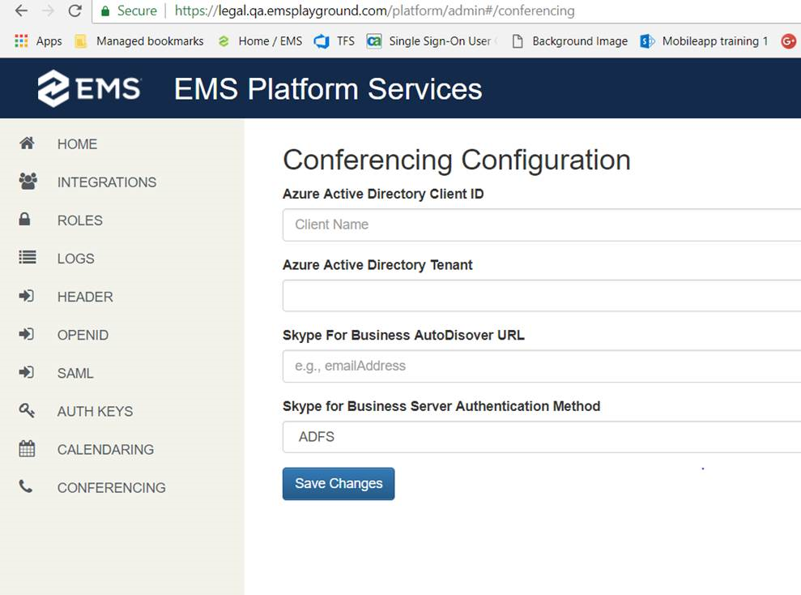
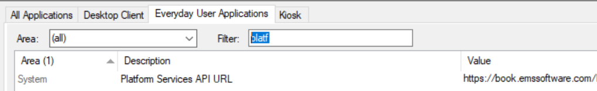
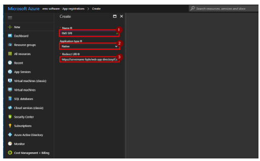

Configure Skype for Business
IMPORTANT: Skype for Business can now also be configured in the Conferencing tab of the EMS Platform Services Admin Portal.
This topic provides information on the following:
Supported Skype Products
Prerequisites
Skype for Business Server 2015 (On-premise) Integration
The following prerequisites are required for the Skype for Business Server 2015 (on-premise) integration:
- Ensure a SHA2 and above Algorithm certificate is installed and functional. SHA2 is required as major browsers no longer support SHA1.
- To provide a URL, navigate to the Platform Services Admin Page Conferencing tab. If a URL is not provided, EMS will build a URL based on the Everyday User's email address.
NOTES: Optionally, you can provide one or more URLs. Multiple URLs must be separated by commas and contain no spaces.
Ensure you can access the URL without certificate errors (EMS Software recommends using the Google Chrome browser). AutoDiscover URL should return an xml file. If you experience certificate errors, please refer to the first step above.
- Ensure all EMS components have been deployed:
- EMS Platform Services
- EMS Web App (optional)
- (optional)
- Integration to Microsoft Exchange
Skype for Business Online Integration
The following prerequisites are required for the Skype for Business online integration:
-
Microsoft Azure Active Directory.
- Ensure you have admin access to Azure environment.
-
EMS Conferencing URI (for example: https://servernamefqdn/web app directory/ConferencingLogin.aspx/). This URI must be verifiable and accessible externally.
- Ensure all EMS components have been deployed:
- EMS Platform Services
- EMS Web App (optional)
- (optional)
- Integration to Microsoft Exchange
Deployment Types
There are three deployment types for Skype for Business:
- Skype for Business Server 2015 On Premise: This deployment for Skype for Business does not retain a token and requires authentication every 8 hours. As a result, you will be asked to sign in every 8 hours. Please follow the instructions in Prerequisites for Skype for Business Server 2015 (On-premise) Integration and Integrate Skype for Business Server for configuration.
- Skype for Business Online: This deployment retains the token so only an initial authentication is required. Please follow the instructions in Prerequisites for Skype for Business Online Integration and Integrate with Skype for Business Online for configuration.
- Hybrid: This deployment has the same authentication method as the Online deployment. Please follow the instructions in Prerequisites for Skype for Business Online Integration and Integrate with Skype for Business Online for configuration.
NOTE: EMS Software uses Unified Communications Web API 2.0 to integrate with Skype for Business Server and Skype for Business Online.
Skype for Business Authentication and Authorization Sequence Diagram

Important: Ensure that you have Exchange Web services component deployed in your environment.
Integrate with Skype for Business Server
Important: As of Update 24, the Skype for Business parameters have moved from EMS Desktop Client to EMS Platform Services. If you have installed Update 24 or higher, you will need to configure Skype for Business parameters in the Conferencing tab of EMS Platform Services Admin Portal.
Conferencing Tab of EMS Platform Services Admin Portal

To configure Skype for Business in the EMS Platform Services Admin Portal:
- Navigate to the Conferencing tab.
- Provide a Client Name in the Azure Active Directory Client ID field. This determines the ID of the registered application.
- Provide the Azure Active Directory Tenant. This determines the name of the AAD tenant.
- Provide the Skype for Business AutoDiscover URL. This performs autodiscovery to find the appropriate server to communicate with. Multiple URLs must be separated by commas and cannot contain any spaces. The client machine and the Web server should have access to the Autodiscover URL.
- Choose a Skype for Business Server Authentication Method from the drop-down. This determines the authentication type that is used to generate a token. You can choose from the following authentication methods:
- NTLM
- ADFS
- Username/Password
- Oauth (Online)
- Click Save Changes.
- From the Everyday User Applications parameters tab, select the Platform Services API URL parameter and click Edit to specify the Platform Services URL.
Everyday User Applications Tab, Platform Services API URL

-
Add EMS Applications to the Allowed Domains List. Unified Communications Web API (UCWA) uses xframe and cross-domain scripting to accomplish the user authentication to leverage the integration. Therefore, EMS applications must be added to a whitelist within the Skype for Business implementation. The whitelist needs to be updated on each of the servers that a user could leverage. For more information, please see here.
- At a minimum, customers will need to whitelist the EMS Web App and EMS Mobile App conferencing URL (trailing forward slash is required). Please see examples below:
- EMS Web App: https://servername.domain/EMSWebApplicationName/ConfrencingLogin.aspx/
- Any combination of this URL will need to be whitelisted (e.g., if there is a different URL for Internal versus External or Mobile Web Access).
- EMS Mobile App:
emssoftware://skype/x- If the customer re-Packages the EMS Mobile App, the same URL should be used.
- Optionally, whitelisting the EMS Web server will facilitate both test and prod environments without adding multiple single entries. Please consult your organization's IT department and provide them with the following steps.
Important: When testing the Skype for Business Integration, ensure you are using a whitelisted FULLY QUALIFIED DOMAIN. Most browsers will throw a cross domain error unless the server name is whitelisted without FDQN.
For example: http://xxxx.servername.com/emswebapp is different than http://xxxx/emswebapp
or https://xxxxx.servername.com/emswebapp
-
Skype certificates. The client devices and EMS Servers need to be able to trust the certificates that are installed on the Skype servers within the Skype implementation. Customers can use private certificates that the Web server has been configured to trust.
Integration with Skype for Business Online
- Create a Skype for Business App in Azure AD:
- Sign into the Azure Management portal.
- Set the Azure Active Directory.
- Select App registration.
- Click New application registration.
- Enter the required information, including:
- In the Name field, enter the name of your application (e.g., EMS SFB).
- In the Application type field, select Native.
- In the Redirect URI field, enter the Conferencing URI (make sure to include the trailing slash).
- Click Create.
Creating a Skype for Business App in Microsoft Azure

- Modify the Skype for Business App permissions as follows:
- Click on the Skype for Business App from the App Registrations.
- Click Required Permissions.
- Click Add.

- Select all permissions for Skype for Business online.

- Select Windows Active Directory and choose only Sign in and read user profile.

- Click Save.
Note: From this Skype for Business application, users can add multiple URI (e.g., for testing or production URI) without creating separate Skype for Business apps for each environment.
- Note the Client ID. This will need to be added to EMS parameters.

- From the EMS Platform Services Admin Portal, set the authentication for Skype for Business.
- Configure the Reply URL in EMS Mobile App and EMS Web App as follows:
- EMS Mobile App:
- Refer to the steps outlined in this documentation.
- In the Reply URL field, insert emssoftware://skype/x.
Warning: The cache must be cleared in EMS Platform Services and EMS Web App whenever parameter changes are made in the EMS Desktop Client.
- EMS Web App:
- In the Reply URL field, insert the root URL:
- Skype for Business Reply URL = https://loripsor/ConferencingLogin.aspx (where EMS Web App URL = htttps://loripsor.emswebapp.com and Root URL = loripsor)
NOTE: When updating the EMS Web App, re-enter/reissue the secret key (from EMS Platform Services) in the new web.config file. You may need to add https://login.microsoftonline.com and EMS Web App server in the same Internet zone. This is how Microsoft verifies and sends the token key back to EMS Web App/Platform Services server.
Connect EMS Web App to Platform Services
To integrate with Skype for Business, EMS Web App must connect to EMS Platform Services.
- Navigate to the EMS Platform Services Admin Portal.
- Select Integrations. Under Clients, click on the EMS Web App link.
- Click the Reset Secret button and copy the generated Secret.
- In the web.config file located in the designated folder for your current version of EMS, insert the copied Secret ID into the value field.
<add key="platformServicesSecret" value="YourSecretID" />
IMPORTANT: EMS Cloud Services customers do not need to generate a Secret or insert it into the web.config file (Steps 3 through 4).
- Clear the cache in EMS Platform Services by navigating back to the EMS Platform Services Admin Portal and clicking the Clear Cache button.
- In the EMS Desktop Client, navigate to System Administration > Settings > Parameters > Everyday User Applications. Configure the Platform Services API URL parameter. Click Close.
Everyday User Applications Tab, Platform Services API URL

Configure Skype for Business on Global Templates
IMPORTANT: As of Update 24, the Skype for Business parameters have moved from EMS Desktop Client to EMS Platform Services. If you have installed Update 24 or higher, you will need to configure Skype for Business parameters in the Conferencing tab of EMS Platform Services Admin Portal.
- Configure Skype for Business in the EMS Platform Services Admin Portal.
Configuring Skype for Business on a Global Template

- Navigate to System Administration > Settings > Parameters > Everyday User Applications tab.
- From the Area dropdown, choose System.
- Select Platform Services URL. Click Edit.
- Enter the URL for Platform Services. For example: https://serverURL/{PlatformServicesName}.
- Click OK.
- Click Close.
-
Navigate to System Administration > Settings > Parameters > Everyday User Applications tab.
- From the Area dropdown, choose Skype for Business.
- Select Enable Skype for Business. Click Edit.
- The default value is No. Set the Description to Yes.
- Click OK.
- Click Close.
-
In the Everyday User Application Settings, check the Enable Integration to Microsoft Exchange box.
Configure Skype for Business on a Process Template Level
NOTE: Changing the parameters on a template level will override the global settings.
- In the EMS Desktop Client, navigate to Configuration > Everyday User Applications > Everyday User Process Templates.
- Click New. The template dialog box appears.
Note: To edit an existing template, see Configure Skype for Business on Existing Templates.
- In the Everyday User Application Settings section of the Process Templates tab, check the Enable Integration to Microsoft Exchange box.
- Navigate to the Parameters tab.
-
Filter the parameters by typing "Skype" in the Filter field.
- Click on the Enable Skype for Business parameter and click Edit. The Edit Parameter dialog box appears.
- The default value is No. Select Yes from the Enable Skype for Business dropdown.
- Click OK on the Edit Parameter dialog box.
- Click OK on the Everyday User Process Template box.
- Click Close.
Configuring Skype for Business on a Process Template Level

WARNING: The cache must be cleared in EMS Platform Services and EMS Web App whenever parameter changes are made in the EMS Desktop Client.
Configure Skype for Business on Existing Process Templates
To configure Skype for Business in existing templates:
- In the EMS Desktop Client, navigate to Configuration > Everyday User Applications > Everyday User Process Templates.
- Click on the existing template for which you want to enable Skype for Business.
- Click Edit. The template dialog box appears.
- Ensure that the Enable Integration to Microsoft Exchange box is checked in the Everyday User Application Settings section of the Process Templates tab.
- Navigate to the Parameters tab.
- Filter the parameters by typing "Skype" in the Filter field.
- Click on the Enable Skype for Business parameter and click Edit. The Edit Parameter dialog box appears.
- The default value is No. Select Yes from the Enable Skype for Business dropdown.
- Click OK on the Edit Parameter dialog box.
- Click OK on the Everyday User Process Template box.
- Click Close.
Configuring Skype for Business in an Existing Template

WARNING: The cache must be cleared in EMS Platform Services and the EMS Web App whenever parameter changes are made in the EMS Desktop Client.
NOTE: Once a Skype meeting is added to a reservation, a Skype meeting flag, which indicates that the reservation has a Skype meeting, appears in the Booking Summary tab for the reservation in the EMS Desktop Client. Additionally, the Skype ID will appear in the Properties tab for the reservation. A reservation-level display field named Skype Meeting in the Query Builder will indicate there is a Skype meeting in the reservation.